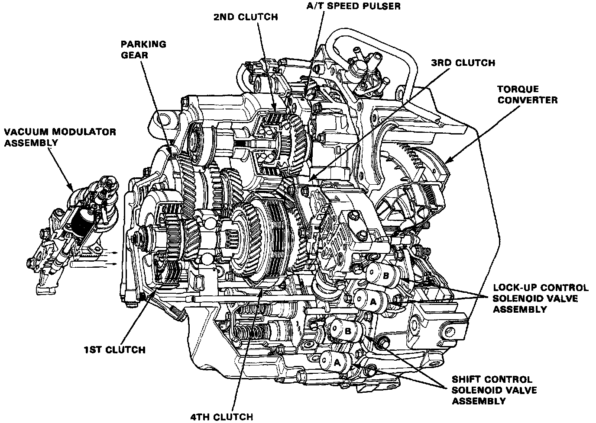
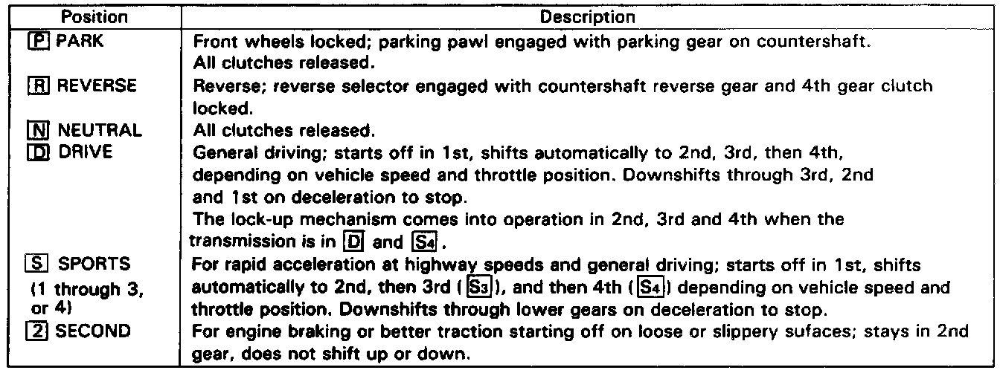

General Description

AUTOMATIC TRANSMISSION OVERVIEW
The Automatic Transmission is a combination of a 3-element torque converter and a triple-shaft electronically controlled automatic transmission which provides 4 speeds forward and 1 speed reverse. The entire unit is positioned in line with the engine.
TORQUE CONVERTER, GEARS AND CLUTCHES
The torque converter consists of a pump, turbine and stator, assembled in a single unit.
They are connected to the engine crankshaft so they turn together as a unit as the engine turns. Around the outside of the torque converter is a ring gear which meshes with the starter pinion when the engine is being started. The entire torque converter assembly serves as a flywheel while transmitting power to the transmission mainshaft.
The transmission has three parallel shafts, the mainshaft, the countershaft and the secondary shaft. The mainshaft is in line with the engine crankshaft.
The mainshaft includes the clutches for 1st, and 4th, and gears for 3rd, 4th, Reverse and 1st (3rd gear is integral with the mainshaft, while reverse gear is integral with 4th gear).
The countershaft includes 3rd clutch and gears for 2nd, 3rd, 4th, Reverse and 1st.
The secondary shaft includes 2nd clutch, the secondary drive gear, and 2nd gear.
The 4th and reverse gears can be locked to the countershaft at its center, providing 4th gear or Reverse, depending on which way the selector is moved.
The gears on the mainshaft are in constant mesh with those on the countershaft. When certain combinations of gears in the transmission are engaged by the clutches, power is transmitted from the mainshaft to the countershaft to provide[S3], [S4], [D], [2] and [R].
ELECTRONIC CONTROL
The electronic control system consists of the A/T control unit, sensors, and 4 solenoid valves. Shifting and lock-up are electronically controlled for comfortable driving under all conditions.
The A/T control unit is located below the dash to the left of the steering column.
HYDRAULIC CONTROL
The valve assembly includes the main valve body, secondary valve body, servo valve body, and regulator valve body. They are bolted to the torque converter housing as an assembly.
The main valve body contains the manual valve, 1 - 2 shift valve, 2 - 3 shift valve, 3 - 4 shift valve, cooler relief valve, orifice control valve, lock-up shift valve, lock-up control valve, 3 - 2 kick-down valve, pressure relief valve and the oil pump.
The secondary valve body includes the 4th exhaust valve, 3rd kick-down valve, modulator valve, servo control valve and the 2nd orifice control valve.
The servo valve body contains the accumulator pistons and servo valve. The regulator valve body contains pressure regulator valve. T/C check valve, and lock-up timing valve. Fluid from the regulator passes through the manual valve to the various control valves.
The 1st, 3rd and 4th clutches receive oil from their respective feed pipes.
SHIFT CONTROL MECHANISM
Input from various sensors located throughout the car determines which shift control solenoid valve the A/T control unit will activate. Activating a shift control solenoid valve changes modulator pressure, causing a shift valve to move. This pressurizes a line to one of the clutches, engaging that clutch and its corresponding gear.
LOCK-UP MECHANISM
In [S4] or [D], in 2nd, 3rd and 4th, pressurized fluid is drained from the back of the torque converter through an oil passage, causing the lock-up piston to be held against the torque converter cover. As this takes place, the mainshaft rotates at the same speed as the engine crankshaft. Together with hydraulic control, the A/T control unit optimizes the timing of the lock-up mechanism.
The lock-up valves control the range of lock-up according to lock-up control solenoid valves A and B, and vacuum modulator valve (throttle valve B). When lock-up control solenoid valves A and B activate, modulator pressure changes. Lock-up control solenoid valves A and B are mounted on the torque converter housing, and are controlled by the A/T control unit.

GEAR SELECTION
The selector lever has six positions:[P] PARK, [R] REVERSE, [N] NEUTRAL, [D],[S] SPORTS and [2] SECOND.
Starting is possible only in[P] and [N] through use of a slide-type, neutral-safety switch.
POSITION INDICATOR
A position indicator in the instrument panel shows what gear has been selected without having to look down at the console.